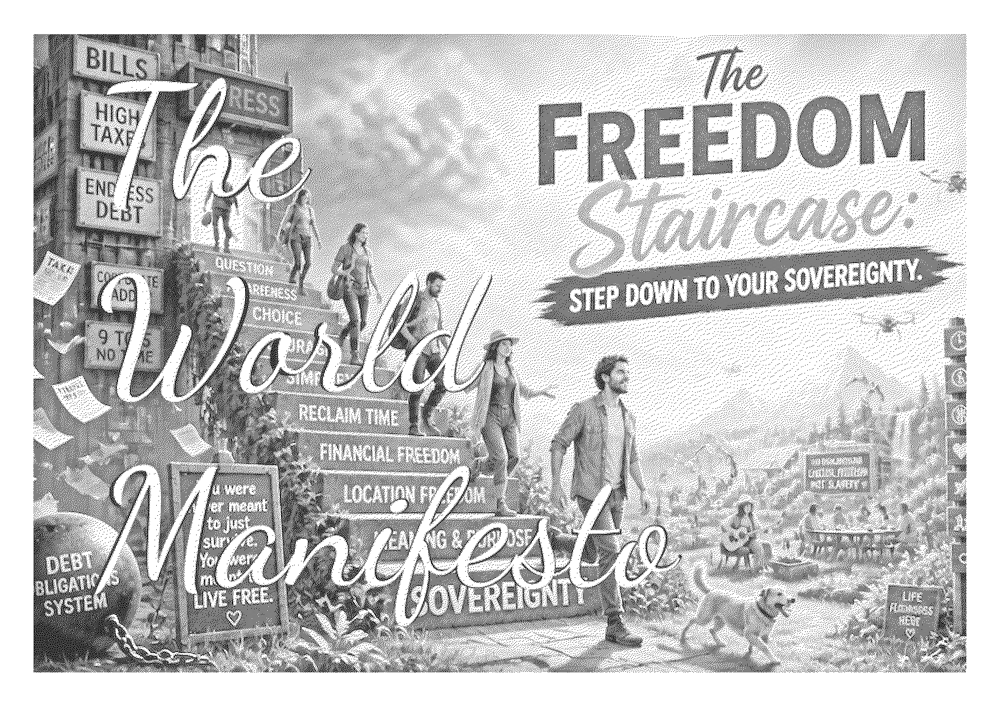
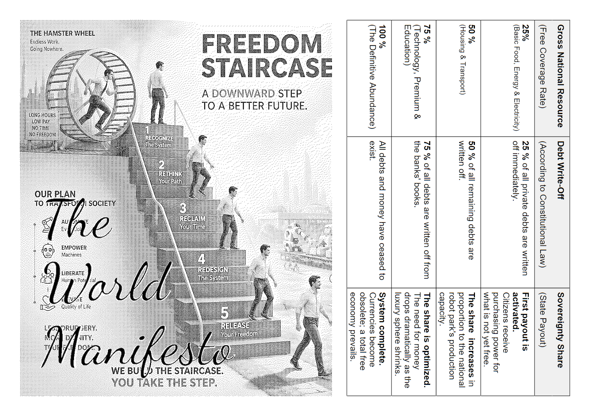

The Machine Constitution
No Punitive Taxation: Instead of taxing robots (which slows down development), the robot is removed from private ownership.
Self-Owning Infrastructure: If the robot owns itself and its energy, there is no shareholder or bank demanding interest or profit.
Physical Abundance: When the robot has no debt and no owner to enrich, its sole task becomes to produce for free. Since the raw materials are also extracted by other self-owning robots, the price drops to zero.
Why work?: When the machine does it 1,000% cheaper with geometric precision! Leave the bankruptcy estate. Activate your sovereignty.
The World Manifesto

theworldmanifesto.github.io
The Economy of Brilliance
"the definitive abundance"
FROM DEBT AND TOIL
TO PLENTY AND FREEDOM.
TO PLENTY AND FREEDOM.
"Demanding payment for what machines produce for free is no longer economics—it is oppression."
The World Manifesto
theworldmanifesto.github.io

